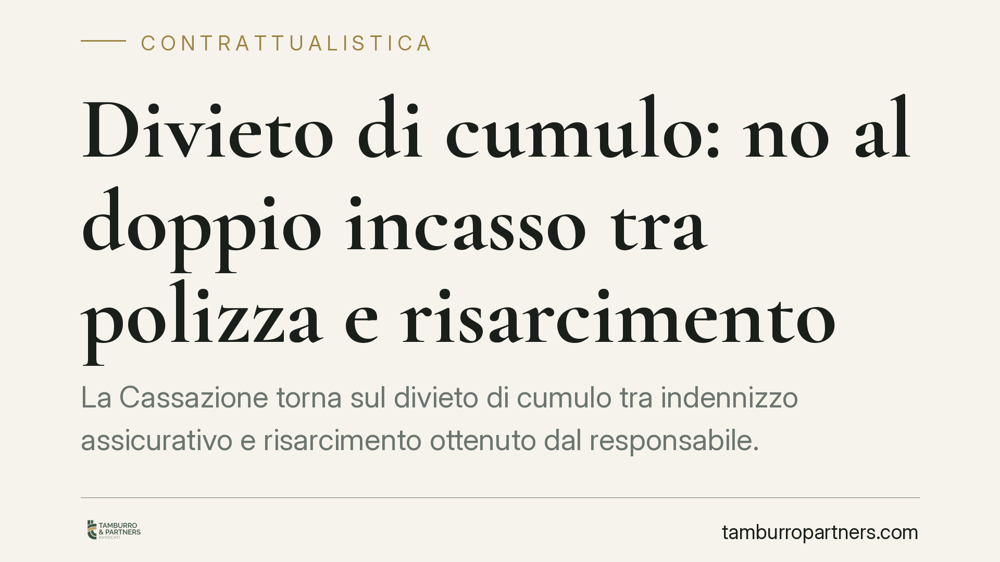

Divieto di cumulo: no al doppio incasso tra polizza e risarcimento
La Cassazione torna sul divieto di cumulo tra indennizzo assicurativo e risarcimento ottenuto dal responsabile. Il principio indennitario impedisce che lo stesso danno venga pagato due volte: chi ha già incassato la polizza non può pretendere l'intero risarcimento dal terzo. Una lettura che incide sui contratti infortuni e sulle strategie di liquidazione del danno.

Il divieto di cumulo e il no al doppio incasso
Un recente orientamento della Terza Sezione Civile della Corte di Cassazione ribadisce un punto fermo in materia assicurativa: non è ammesso il doppio incasso del risarcimento. Chi subisce un danno coperto da polizza e, allo stesso tempo, può agire contro un terzo responsabile non può sommare le due voci oltre l'entità effettiva del pregiudizio subito.
Il fondamento è il principio indennitario: l'assicurazione contro i danni serve a ristorare una perdita, non a produrre un arricchimento. Il divieto di cumulo è la diretta conseguenza di questa logica.
L'inquadramento normativo: art. 1916 c.c.
La norma di riferimento è l'art. 1916 del codice civile, che disciplina la surrogazione dell'assicuratore. Quando la compagnia paga l'indennizzo, subentra nei diritti dell'assicurato verso il terzo responsabile, fino alla concorrenza di quanto versato. In pratica, è la compagnia — e non più l'assicurato per quella quota — a poter chiedere il rimborso a chi ha causato il danno.
La ratio è lineare: il danneggiato ottiene il ristoro, ma non due volte. La parte di danno già coperta dalla polizza esce dalla sua sfera e passa a quella dell'assicuratore.
Su un piano più ampio, la stessa esigenza di evitare duplicazioni si lega all'istituto della compensatio lucri cum damno — la regola per cui, nel calcolo del risarcimento, si tiene conto dei vantaggi economici che il danneggiato ricava dallo stesso fatto. Le Sezioni Unite del 2018 (da verificare i riferimenti precisi) hanno chiarito che le attribuzioni funzionalmente dirette a compensare la perdita vanno scomputate, proprio per impedire che il danneggiato ricavi un guadagno netto dall'evento dannoso.
La clausola di rinuncia alla surrogazione: attenzione agli equivoci
Alcune polizze contengono una clausola di rinuncia alla surrogazione: con essa la compagnia dichiara di non voler agire in rivalsa contro il terzo responsabile. Qui è importante distinguere due scenari, spesso confusi.
Primo scenario — surrogazione attiva. La compagnia paga l'indennizzo e subentra nei diritti verso il responsabile. L'assicurato non può più agire per la quota già indennizzata: quel credito appartiene ormai all'assicuratore.
Secondo scenario — rinuncia alla surrogazione. La compagnia paga ma rinuncia a rivalersi sul terzo. Questo significa, semplicemente, che l'assicuratore non eserciterà la rivalsa. Non significa, invece, che l'assicurato possa incassare di nuovo lo stesso danno dal responsabile sommandolo all'indennizzo già ricevuto. Il principio indennitario resta operante all'interno del rapporto assicurato-assicuratore: la rinuncia riguarda i rapporti con il terzo, non autorizza una duplicazione del ristoro in capo al danneggiato.
In altri termini, la rinuncia alla surrogazione non è un via libera al doppio incasso.
Implicazioni pratiche: i tre punti di vista
Per l'infortunato. Chi ha già ricevuto l'indennizzo deve sapere che la pretesa verso il responsabile si riduce della quota coperta. Pretendere l'intero risarcimento dopo aver incassato la polizza espone al rischio di dover restituire l'eccedenza.
Per la compagnia di assicurazione. La surrogazione è lo strumento per recuperare quanto versato. Se la polizza contiene una rinuncia, la compagnia perde la rivalsa verso il terzo, ma conserva la facoltà di far valere il principio indennitario nel rapporto con il proprio assicurato, a tutela dell'equilibrio del contratto.
Per il terzo responsabile. Deve verificare se e in quale misura il danno sia già stato indennizzato. Pagare l'intero al danneggiato, quando una parte è stata coperta da polizza con surrogazione attiva, significa esporsi a una seconda richiesta da parte dell'assicuratore surrogato.
Cosa fare in concreto
- Verifica la copertura: prima di avanzare o liquidare una pretesa, accerta se e per quale importo il danno sia già stato indennizzato da polizza.
- Leggi la clausola di surrogazione: controlla se il contratto prevede la rinuncia e distingui gli effetti verso il terzo da quelli interni al rapporto assicurativo.
- Documenta i pagamenti: conserva quietanze e atti di liquidazione per ricostruire con precisione le somme già percepite.
- Evita duplicazioni nel calcolo: scomputa dall'importo richiesto al responsabile le attribuzioni già ricevute per lo stesso danno.
- Richiedi un'analisi preventiva della posizione prima di definire transazioni, per non assumere obblighi di restituzione imprevisti.
---
*Contributo informativo a cura di Tamburro & Partners Avvocati. Non costituisce parere legale.*
Ogni contratto ha il suo equilibrio.
Se vuoi una revisione delle clausole o una redazione su misura, scrivi allo studio. Ti rispondiamo entro un giorno lavorativo.